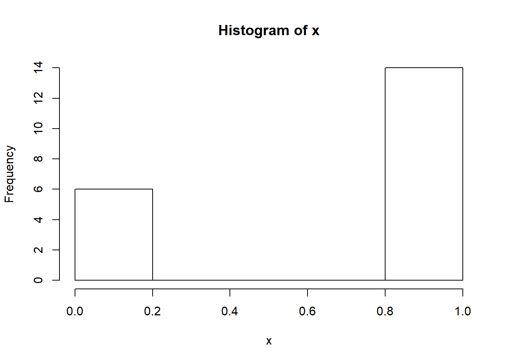

Chapter 5 Inference via Hypothesis Tests for One Sample
5.1 Example: Detection Probability
An important problem for the US Army is protecting soldiers in forward positions. One of main threats to these soldiers are explosive projectiles launched from great distances. These are often refered to as “indirect fires”, since the folks launching the projectiles (“firing” the projectiles) may not have direct visibility (“line of sight”) to their target. For example, artillery like the US M777 Light Towed Howitzer can fire projectiles over 40 km, far beyond the distance a soldier operating the machine could aim it. Instead, the gun crew relies on information about where to shoot provided to them by other units on the battlefield. This allows them to effect the battle from far away and without alerting their target.
To protect soldiers from similar threats, the US Army developed the Q-53 Counterfire Radar. One of this system’s primary functions is to detect incoming indirect fires and pinpoint the source of those shots. Because soliders will be relying on the Q-53 in combat, the US Government tested it extensively to better understand how it would perform in an operational setting. The testers fired shells from systems that closely resembled the artillery that might be seen on the battlefield while actual soldiers operated a Q-53. For each shell that was fired, the testers recorded whether or not the Q-53 crew was able to detect the projectile with their system.
Using data from this test, evaluators were able to the likelihood that the Q-53 would detect an incoming projectile.
5.1.1 Understanding system performance
Let’s take a step back and consider the data we’re getting from this test and try to understand why the testers did things the way they did.
First, let’s consider the goal of this test. At the end of the day, the US Army wants to know how effective the Q-53 is at it’s job. This job is to help protect soldiers by giving them early warning if they’re under attack from indirect fires like artillery. Therefore, it’s vital that the Q-53 detect incoming projectiles with high probability.
Once we understand this, the choice to measure the detection probability for incoming projectiles is completley logical. This measure ties directly to the goal of the experiment. You won’t always be able to find a response variable that ties so directly to the goal of your test, but when you do, rejoice.
There are some other measures the testers could’ve used. For example, they could’ve looked at how long a projectile was detected prior to its impact on the target. Similarly, they could’ve measured the distance from the target at time of detection. Both of these measures would give more detailed information than detection alone. However, they’d be harder to measure precisely. Addiing additional instrumentation to the Q-53 and to the test projectiles being fired at the range would add elements to the experiment that would make it less realistic. Perhaps instrumenting the projectiles would make them easier to detect. Regardless, the testers deemed the detection probability adequate to make their assessment of the system.
5.1.2 Data Analysis
Having identified their response variable, the testers collected data on which projectils were detected. Table 1 shows the first 20 shots collected.

It’s clear that the system detects these projectiles with a high probability, but what conclusions can we draw from
5.1.3 Data from Experiments
Some data comes from a well-designed experiment where a researcher uses sound principles to select units and conduct interventions.
For example, a mechanical engineer wants to determine which variables influence overall gas mileage of a certain year and model of a car. Gas mileage would be referred to as the response variable for this study.
After careful consideration, the engineer chooses to investigate a few explanatory variables. They looked at the following factors that they believed may affect the overall gas mileage:
- Tire pressure (low, standard)
- Octane rating of fuel (regular, midgrade, premium)
- Type of driving (defensive, aggressive)
They also choose to control or hold constant the following variables during the implementation of the study:
- Weather conditions
- Route
- Tire type
- Past car usage
The engineer randomly selects 24 cars from the assembly line for that year and model of car (we’ll learn more about the importance of selecting a representative sample of cars shortly). Software is used to randomly assign a treatment or combination of the factors to each car of the 24 cars. For instance, low tire pressure, regulare octane fuel, and defensive driving would be a treatement. The cars would be called the experimental units or (EUs) as they are the unit the treatments are assigned to.
The experiment is run and the gas mileage found for each car. As the car is being measured we’d refer to the car as the observational unit.
This short description exhibits three important concepts in experimental design that we’ll come back to many times.
Experimental Study - researchers manipulate the conditions in which the study is done.
Pillars of experimental design: (Put an outer block around this)
- Randomization - treatments are randomly assigned to the experimental units
- Replication - multiple (independent) experimental units are assigned the same treatment
- Control - study conditions are held constant where possible to reduce variability in the response
5.1.4 Data from Observational Studies
Some data comes from an observational study where the researcher collects data without imposing any changes.
For example, an economist wants to investigate the effects of recently added tariffs on agricultural products to the amount and value of such products that are traded between the United States and Asia. This study would have two response variables, amount and value of each product traded between the two parties.
In order to take into account season variation and time of year, the economist decides to compare the two response variables from the current year - 6 months worth of data - to the average values of the two response variables during the same 6 month periods for the past 5 years. We would refer to the time frame of the data as an explanatory variable. This time frame could be labeled to take on one of two values: no-tariff (past) or tariff (current).
The researcher obtains the data from the census bureau and conducts their analysis.
Notice that the researcher, while certainly being actively involved in the careful consideration of the data to be collected, does not actively intervene or impose a change. This is the key component of an observational study.
Observational Study - researchers collects data without imposing any changes on the study environment.
5.1.5 Observational vs Experimental
You may have noticed that both types of studies have some things in common. For instance, both studies have response (??? so I was thinking about maybe bolding most stats words as we go to point them out to students… thoughts???) variables that characterizes the performance of the study in some sense. Importantly, these response variables have variation. That is, observing the variable is non-deterministic even under identical situations. There are also explanatory variables that the researcher is interested in with regard to their relationship with the response variable.
Beyond that, both studies hope to make conclusions about a larger group using data. This is the idea of statistical inference (??? Do we want to talk about the differences between prediction and inference here? - later???). More formally the group of values, items, or individuals defines the a population of interest and the data collected represents the sample. For the gas mileage example, the population would be all cars of the year and make in question and the sample would be the data on the 24 cars. For the tariff example, the population would be a conceptual population of all future agricultural products traded between the United States and Asia and the sample would be the information from the six years of trade data.
Population - (Possibly conceptual) group of units of interest
Sample - Subset of the population on which we observe data
Statistical Inference - Process of using sample data to make statements or claims about a population (???Usually with the goal of determing which variables are important for a response???)
Both of these studies had to determine how to obtain their observations. For the experiment, 24 cars were used. For the observational study, six years of data were collected. How this data is collected can be extremely important in terms of the types of conclusions that can be made. Data needs to be unbiased and representative of the population in which the researcher hopes to make inference otherwise the conclusions made are likely invalid. We’ll discuss the idea of what makes a good and bad sampling scheme later.
The major difference between the two studies was the active (experimental) and passive (observational) roles played by the researcher. This difference is also of vital importance to the types of conclusions that can be made from the study. A well-designed experiment can often infer causation to the treatments where an observational study cannot.
The conclusions a researcher can make based on how the data were collected and the type of study are outlined in the table below. (??? Probably just remake this table ourselves with our own words. This isn’t exactly ‘their’ original thought or something we need to attribute. ???)

Figure 5.1: Scope of Inference, cite: Khan Academy
Doing an observational study doesn’t mean that your study is bad! An observational study is sometimes done out of necessity when an experiment wouldn’t be ethical or feasible. For the tariff example, there really isn’t a way to conduct an experiment. If we wanted to design an experiment to see if smoking causes lung cancer, that would be unethical because we can’t force people to smoke. The key point is that the implications we can draw will differ greatly between experimental and observational studies and will depend heavily on the quality (in relation to the population) of the data you have.
5.1.6 The Role of Statistics
Statistics is the science of learning from data. It encompasses the collection of data, the design of an experiment, the summarization of data, and the modeling or analysis used in order to make a decision or further scientific knowledge. (???I feel like this definition doesn’t quite get the sampling part right or maybe the holistic process or something - update as needed! JP???)
(This will be changed to a different style of callout - maybe “note”?)
Statistics in every day use usually refers to simply summaries about data (means/averages, proportions, or counts).
Statistics as a field encompasses a much larger range of ideas including how to collect data, model data, and make decisions or come to conclusions when faced with uncertainty.
Statistical methods are needed because data is variable. If we again collected data about the gas mileage of vehicles under the exact same study conditions we’ll get slightly different results. If we observed another six month period of trade data we’ll see different amounts and values. Accounting for this variability in data is a key component of a statistical analysis.
Generally, one should try to take a holistic view of a study. Before any data is collected it is vital to understand the goals and background of the study. These will inform the data you ideally want to collect as well as the data that you are able to collect - which may need to act as a proxy. A plan should be determined for the actual collection and storing of the data. The entire study design will then inform the statistical analysis and conclusions that can be drawn.
Taking this bigger picture view of the problem, we can usually follow these steps (we’ll try to follow these throughout the book!):
- Define the objective of the experiment and understand the background (Objective & Background)
- Select appropriate response variables (Response)
- Identify sources of variation (Sources of Variation)
- Choose experimental design (if applicable) (Experimental Design)
- Perform the test/collect the data (??? not sure how to shorten that to make it make sense ???)
- Statistically analyze the data (Analysis)
- Draw conclusions (Conclusions)
We’ll focus on this entire process and mostly investigate designed experiments. We attempt to tackle each topic in this text with a problem-based approach. That is, we identify a real-world problem and discuss the relevant statistical ideas in context. Summaries at the end of each chapter recap the main statistical ideas.
5.2 Marketing Example
5.2.1 Experiment Background
Marketing example. Goal to describe the customers, how they tend to purchase/shop, and maybe find some shared qualities in order to adverstise curated packages to folks.
Define basic things like population, parameters, statistics, and sample.
Discuss conceptual vs actual populations and when we might care about one or the other. Our “sample” is really a bit of data from the conceptual population. Or we could consider it as the population and we just want to describe it.
5.2.2 Selecting Response Variables
We don’t get to choose the variables here as the analytics company gives us what they deem important. We can however still think critically about what is important. Marketing example with data such as Clicks, Impressions, Total Revenue, Total Spent, Average Order Value, Sport, Time of visit/purchase, Campaigns running, etc.
5.2.3 Identifying Sources of Variation
Consider variables linked to the user. Age, other accounts, etc.
5.2.4 Choose an Experimental Design
Discuss our “sampling” scheme vs a random sample. This seems like a case where we aren’t doing a “good” scheme but not much else could be done…
Maybe talk about how in the future you could do alternate email ads or something and do an AB type study.
5.2.5 Peform the Test
Get the data from google analytics or whatever, have a plan for updating each month?
5.2.6 Look at the Data
Careful discussion of not selecting a modeling technique based on this unless it is a pilot study or an exploratory study else we have increased our nominal type I error rate…
(sometimes EDA sometimes data validation only/cleaning - more formal experiments)
Spend a lot of time here talking about graphs of different types. Sample means, sample variances, etc.
Discuss population curves vs sample histograms and the relationship.
5.2.7 Statistically Analyze the Data
New variables as functions of old?
Not a formal test here but comparisons of interest etc.
5.2.8 Draw conclusions
What actionable things have we found? Likely some trends to investigate further. Perhaps run an experiment to formally see if some alteration can be effective.
What can we conclude realistically from this data? To what population are we talking?
5.3 Statistical Testing Ideas
5.3.1 Experiment Background
This example would lend itself to a reasonably easy randomization test or simulation based test. Maybe an AB type study where we swap labels and do that with a nice visual.
Maybe third example with simulation test.
5.3.2 Selecting Response Variables
5.3.3 Identifying Sources of Variation
5.3.4 Choose an Experimental Design
Good discussion of what makes a good sampling design. Maybe a statified example like the river and selecting houses example as a quick expose of the issues with not doing a truly random sampling technique.
Basics of experimental design (randomization, replication, error control ideas).
Recap benefits of doing an experiment vs an observational study.
5.3.5 Peform the Test
5.3.6 Explore the Data
NHST paradigm with false discovery?
5.3.7 Statistically Analyze the Data
5.3.8 Draw conclusions
The implications for the conclusions that can be made from a set of data varies greatly with the quality of the data and study design.